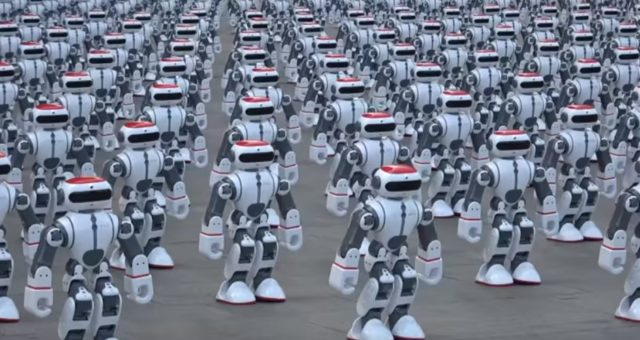

The more people use the internet and mobile devices, the more technology startups we will see. With more competition and more startups in the same field, there will be more customers to compete for. Are there enough customers to satisfy enough companies?
Do we need more diversity in the startup community? Are too many startups competing for the same customers?
How do we achieve this diversity?
What will come from more of this and then more of that?
What does “more of this, more of that” mean?
What are the positive and negative sides of more of this, then more of that?
Diversity
When do we need it? Almost anytime and every time. How do we achieve it? That is up to communities, populations, governments, industries and everyone involved. We need to encourage and educate ourselves about things that matter. We need to embrace diversity and expand it for the better. Let it be there: know about it, even if you do not need to use it all the time. It is about knowing and understanding the idea.
Being part of this
What is there to be part of? The opportunity to grow: for your business to develop, grow up and become independent. Independent from what? From problems towards solutions, from your parents’ home, from anything that does you no good. Whether you are already in or want to join, this is the day, month or year to become part of diversity: more of this, then more of that.
Behind “more of this, then more of that”
The industries behind electronic devices create waves: positive waves for us — though what about the environment? The need to use these devices is already here. Their positive impact is about creating something for people in our time. We use them for everything, with more to come. More of what? More electronics, more startups, healthier economies. Does it make sense? More internet and devices, more startups, larger and better economies around the globe. More of this, then more of that.
The positive and the negative
Think positively about yourself and those around you. You react to something; it happens, then let it go. That is part of positive thinking. The easy part is thinking negatively. Let us not dwell on it.
Both sides of the expression can be good or bad. There is a good side to developing technology, and we should all benefit, including the climate. The bad side is its negative effect on nature and climate. One example is large boats with large engines using old technology that pollutes on a large scale. I expect research and development of better, cleaner energy for boats has already begun and progressed. Norway is one of the leading countries in developing better, cleaner boat engines.
One final question: what about the development of artificial intelligence? Where do we go from there?
AI is the beginning of an epoch, an era of high-tech development.
For now, I get the impression that AI is mostly confusing to many of us.
The most important question is safety: safety for us humans. Where is development going? Think about it. Is it going in the right direction, and which direction is that?
Ask the right questions and you will get solutions: solutions to choose between, solutions for guidance and development.
Controlling AI is necessary because we need to control it before it can control us.
What would it take to have “always total” control over AI?
Always be one step ahead in everything
Create rules covering everything to do with AI
Rules that are predictive

Let us pay attention to more of this, then more of that: to the negative and positive sides, and draw the right conclusions.